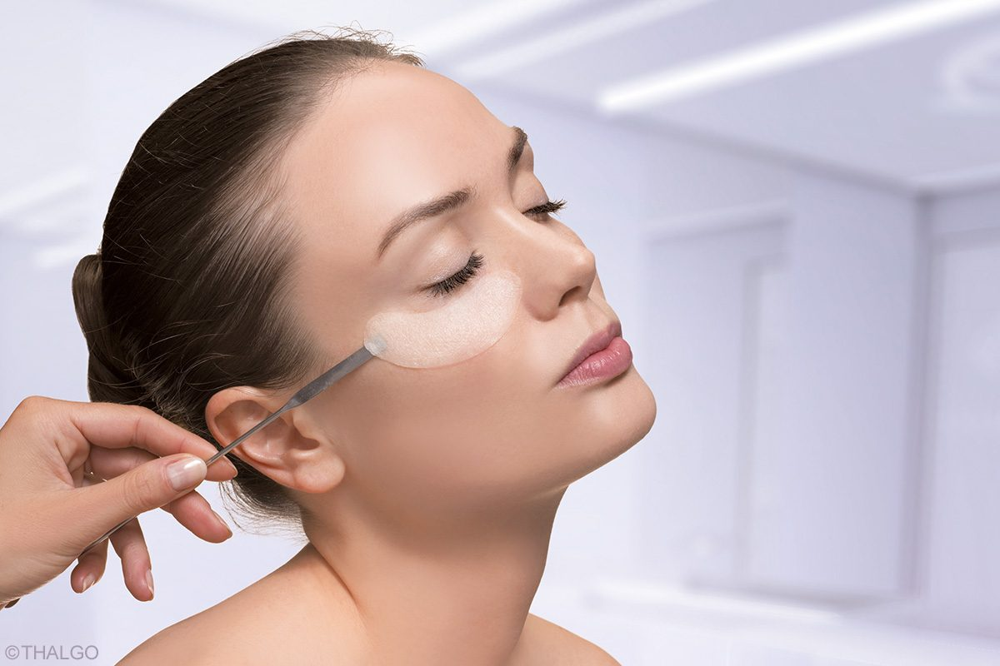

UNSERE PFLEGEPRODUKTE


Durch gezielte, innovative Behandlungen und effektive Pflegeprodukte verbessern wir Ihr Hautbild und sorgen für die Gesunderhaltung Ihrer Haut.

Ein Needling Pen mit feinsten Nadeln setzt tausende oberflächliche Stichkanäle in die Haut. So gelangen hochwirksame Medical-Beauty-Präparate tief in die Hautschichten und entfalten dort eine intensive Repair-Wirkung. Die Haut reagiert mit vermehrter Bildung von Kollagen, Elastin und Hyaluronsäure – für mehr Elastizität und Festigkeit.
Das neueste Verfahren für ein perfektes Lifting aus der ästhetischen Chirurgie – ohne Nadeln, ohne Schmerzen. Angenehme Radiowellen schleusen Wirkstoffe wie Hyaluron, Kollagen, Silizium, Zink und Vitamin C in tiefe Hautschichten ein und bewirken einen sofortigen Anti-Age-Effekt.
Die professionelle Cosmeceutical-Linie M-CEUTIC der THALGO Laboratorien sorgt für eine nachweislich verbesserte Hautqualität, reduzierte Hautunregelmäßigkeiten und ein verfeinertes Hautbild. Entwickelt von einem Expertenteam um Prof. Philippe Humbert, Universitätsklinikum Besançon.
Die Diamant-Mikrodermabrasion trägt die oberen Hautschichten kontrolliert und mechanisch ab – ohne chemische Wirkstoffe. Das sanfte, schmerzfreie Peeling verfeinert das Hautbild, verbessert die Struktur großporiger, unreiner Haut und regt die Zellerneuerung an.